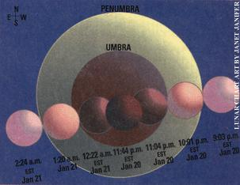

A perfect night to set your eyes sky ward will be January 20, 2000. Many of you will need to bundle up before heading outside, but if your skies are
clear, it will be worth braving the cold:
You will be treated to the sight of an excellent total
eclipse of the moon.
A total lunar eclipse occurs when the Earth comes directly between the sun and moon. When that happens, the moon passes completely into Earth's central shadow or umbra (the Earth's less dark, peripheral shadow that borders the umbra is called the "penumbra"). The interesting thing is that Earth's umbra is rarely completely dark and colorless. Usually, the red sunrise and sunset glows from all around the Earth at eclipse time are "refracted" (bent) around the Earth's solid body into the umbra, which therefore paints the moon predominately reddish during total eclipse.
This is the first total lunar eclipse for North America since 1996 and its longest since 1989. The accompanying diagram gives times and shows which parts of the moon will be covered at different stages. If you happen to be watching far from city lights, note how the few stars of this full-moon night kindle to a multitude by the time the moon is dimmed at total eclipse.
The farther east you are in North America, the later in the evening the eclipse occurs - but also the higher in the sky (almost overhead on the East Coast).
|
 |
|
|